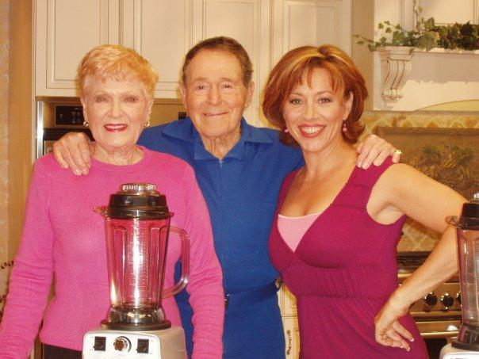
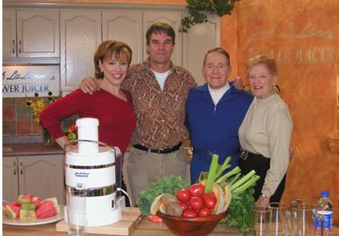
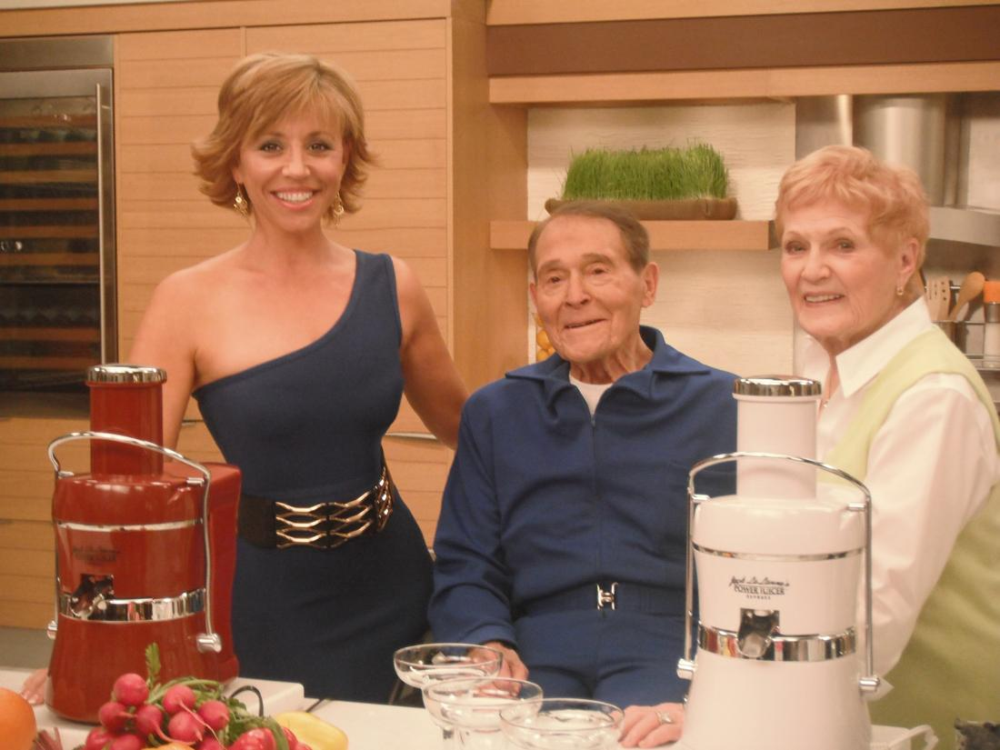
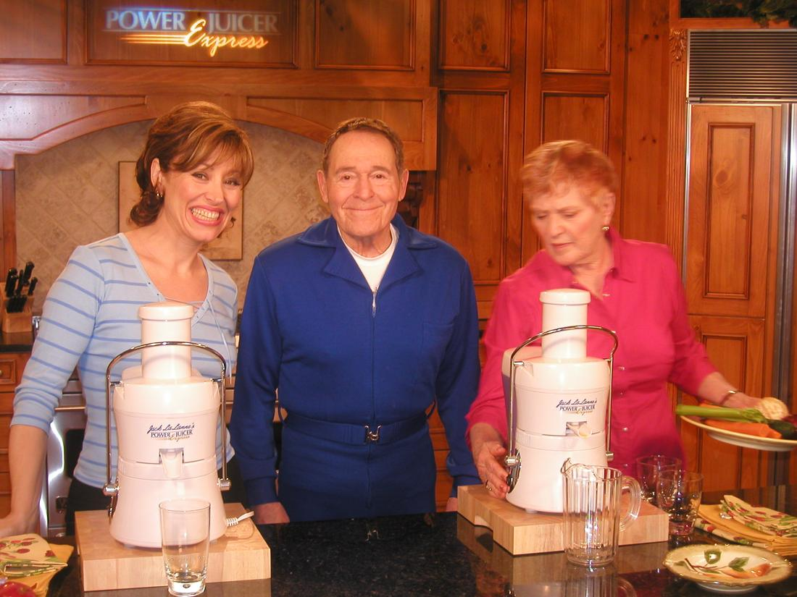
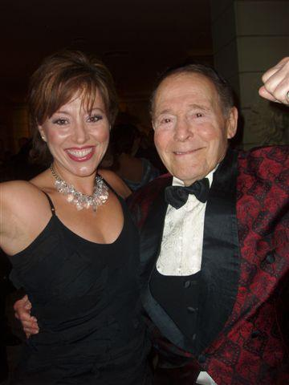
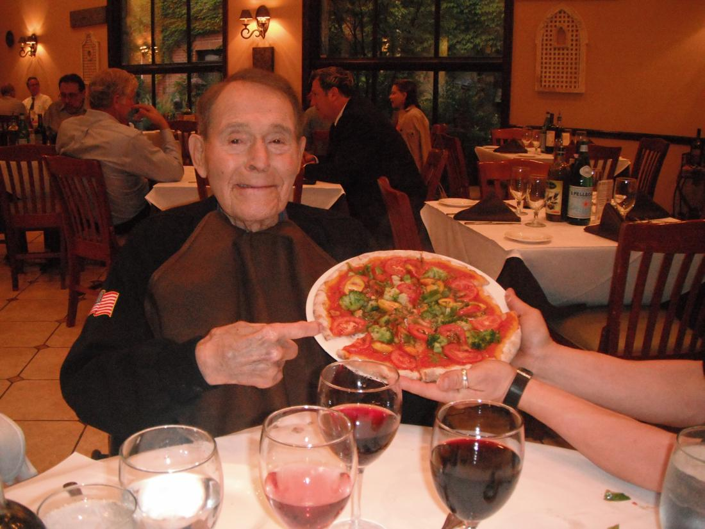

Fitness Legend Jack Lalanne
My 10 year relationship with the Greatest Fitness Hero of ALL TIME: Jack Lalanne
Jack & Riley babies
Diet
LaLanne blamed overly processed foods for many health problems. For most of his life, he advocated primarily a meat and vegetable diet; eating meat three times per day with eggs and fruit in the morning and many servings of vegetables in the afternoon and evening. For six years he was a Vegetarian. In his later years, he appeared to advocate a mostly meatless diet but which included fish, and took vitamin supplements.
In his television programs, he recommended the following meal plan; Breakfast: fruit, eggs and/or meat, and whole wheat toast . Lunch: Big salad, and meat/fish. Dinner: Big salad, two vegetables, meat/fowl, and fruit.
He ate two meals a day and avoided snacks. His breakfast, after working out for two hours, consisted of hard-boiled egg whites, a cup of broth, oatmeal with soy milk and seasonal fruit. For dinner, he and his wife typically ate raw vegetables and egg whites along with fish. He did not drink coffee.
LaLanne said his two simple rules of nutrition are: “if man made it, don’t eat it”, and “if it tastes good, spit it out.” He offered his opinion of the average person’s diet:
Look at the average American diet: ice cream, butter, cheese, whole milk, all this fat. People don’t realize how much of this stuff you get by the end of the day. High blood pressure is from all this high-fat eating. Do you know how many calories are in butter and cheese and ice cream? Would you get your dog up in the morning for a cup of coffee and a donut? Probably millions of Americans got up this morning with a cup of coffee, a cigarette and a donut. No wonder they are sick and fouled up.
Jack Lalanne (26 September 1914 – 23 January 2011) was an American fitness, exercise, and nutritional expert and motivational speaker who is sometimes called “the godfather of fitness” and the “first fitness superhero.”[1] He described himself as being a “sugarholic” and a “junk food junkie” until he was 15. He also had behavioral problems, but “turned his life around” after listening to a public lecture about the benefits of good nutrition.[2] During his career, he came to believe that the country’s overall health depended on the health of its population, writing that “physical culture and nutrition—is the salvation of America.”[3]
Decades before health and fitness began being promoted by celebrities like Jane Fonda and Richard Simmons, LaLanne was already widely recognized for publicly preaching the health benefits of regular exercise and a good diet. He published numerous books on fitness and hosted the fitness television program The Jack LaLanne Show between 1953 and 1985. As early as 1936, at age 21, he opened one of the nation’s first[3] fitness gyms in Oakland, California, which became a prototype for dozens of similar gyms using his name.[4] One of his 1950s television exercise programs was aimed toward women, whom he also encouraged to join his health clubs. He invented a number of exercise machines, including leg-extension and pulley devices. Besides producing his own series of videos, he coached the elderly and disabled to not forgo exercise, believing it would enable them to enhance their strength.
LaLanne also gained recognition for his success as a bodybuilder, as well as for his prodigious feats of strength. Arnold Schwarzenegger once exclaimed “That Jack LaLanne’s an animal!” after a 54-year-old LaLanne beat then 21-year-old Schwarzenegger badly in an informal contest. On the occasion of LaLanne’s death, Schwarzenegger credited LaLanne for being “an apostle for fitness” by inspiring “billions all over the world to live healthier lives.”





This fun photo was taken at Jack’s 90th birthday – it was a treat to party that night!


Free · live on Zoom every Sunday
The Secret Pitch Formula
Join Forbes live for the Pitch Secrets Masterclass. Over 80,000 people have learned the 7-second hook, the three pitch patterns behind $2.5 billion in sales, and how to close without sounding salesy. Free, with a gift worth $500 for registering.
Sundays, 2 p.m. PT / 5 p.m. ET. Registration and the Zoom link are at pitchsecretstraining.com.